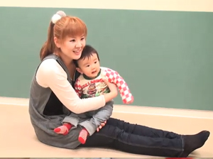

<!-- main -->
<div id="main">

<div id="kyouzai">

<div class="block">
<h3>「おにぎり たべちゃうぞ」の<br />曲に合わせた遊び方</h3>

<a href="http://www.youtube.com/watch?v=nM72P7a939g" data-role="button" data-theme="e" rel="external">YouTubeへ(約1分)</a>
<br />

<p>10ｶ月号のCDに収録の「おにぎり たべちゃうぞ」で、からだ遊びをする読者ファミリーの動画です。自分なりに振り付けをアレンジする参考にしましょう。</p>
</div><!-- /.block -->


<div class="block">
<p class="tx_gray">※モバイルYouTubeを利用して動画をご覧いただけます。<br />
※モバイルYouTubeは大量のパケット通信をおこなうアプリケーションです。携帯端末からYouTubeで動画を見る前に、ご契約の携帯電話のプランが「パケット定額サービス」かどうかご確認ください。<br />
※ご利用の機種によっては動画が見られないことがあります。<br />
※音声つきです｡マナーモードを解除してお使いください｡<br /><br />
撮影/杉村燎一<br /></p>
</div><!-- /.block -->

</div><!-- /#kyouzai -->

</div><!-- /#main -->
